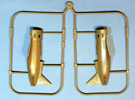

{kind=link}
{kind=link}
{kind=link}
{kind=link}
{kind=link}
{kind=link}
{kind=link}
{kind=link}


Eduard 1/48 Polikarpov I-16 Type 29
Kit #8152 MSRP $29.95 $26.06 from Internet Hobbies
Images and text Copyright � 2007 by Matt Swan
Developmental Background
The concept of the I-16 began in the very early 1930s when Nikolai Nikolaevich Polikarpov was working on the I-15 Bi-plane. He created an aircraft that bore a strong resemblance to the American Gee Bee racer and would be powered by a Wright Cyclone engine. He incorporated a variety of cutting edge features such as retractable landing gear and a totally enclosed cockpit. While the primary fuselage was made from pine stringers and fabric covered plywood the wings were constructed around steel tubing with duralumin and fabric covering. The I-16 used full length trailing ailerons that also functioned as landing flaps. By June 1933 a prototype was operational and in September 1934 the type went into full production as the I-16 type 4 however the Wright Cyclone engine was replaced with a less powerful Soviet built M-22.
Several minor modifications were made to the aircraft design over the next two years resulting in a type 5 and a type 6, both of which saw action during the Spanish Civil War. During this time the aircraft type picked up a couple of nicknames such as �Fly� and �Rat�. Several attempts to increase the firepower were tried giving us the types 10, 12, 17, 27 and 28 however this had an adverse effect on handling and turn radius. Also through these modifications several small increases in horse power were seen with various improved engines. The Type 29 was the final incarnation of the aircraft design with a Shvetsov M-63 engine and a single 12.7mm machine gun. Additional armor was installed as well as improved radio equipment all resulting in weight increases and a shift in balance that required considerable forward stick pressure to maintain level flight. By time production ended in 1941 the Soviet pilots had given the design a new nickname, now it was referred to as Ishak or Donkey. Even with these handicaps the type was on even footing with the Bf-109E and F at low altitudes but by 1943 all I-16s had been removed from service. Today there are six surviving flight worthy I-16s.
The Kit
The kit sprues are all done in the darker tan high pressure injection plastic that has been common from Eduard over the last year. This kit utilizes a couple sprues common to all the Eduard I-16 kits with one sprue specific to the type 29. The main fuselage sprue is the same for the type 18, 24 and 29. All the plastic parts are very clean with no flash, sink marks or injector pins. Sprue gates are thin and should present little difficulty when removing the parts. Surface detail is finely engraved with a mild fabric texture on the wings and control surfaces. The kit includes three different spinners and four different front cowlings. The lower wing has been redesigned for this kit and that sprue also includes the new cowling with the 12.7 mm machine gun. The kit includes options for open or closed cooling flaps and RS 132 underwing rockets.
There are plenty of finer details offered with the kit such as individual exhaust stubs in a couple of varieties. We also get a small fret of colored photo etched parts that cover the instrument panel, seat belts and cooling fan. The clear parts only consist of the gun site and the forward windscreen. Usually the canopy section covering the cockpit was removed due to issues with it slamming around during maneuvers but I still would have liked to seen the part included with the kit. Overall this kit contains one hundred fourteen tan plastic parts, thirty three photo etched pieces and two clear parts for a total of one hundred forty nine pieces in the box.

You may click on these small images to view larger pictures
Decal and Instructions
The kit instructions are extremely well done as a full color pamphlet. The cover page contains a full color reproduction of the box art and a very extensive developmental history of the aircraft type. The inside cover page contains a full parts map and paint code chart. Pages three through eight contain approximately twenty five exploded view construction steps that include plenty of color call-outs. The last four pages display full color painting and decal placement guides for each of four different aircraft.
The small decal sheets provides markings for three Soviet aircraft and a single unit captured by the Rumanians and used as an observation aircraft. The decals appear to be of excellent quality with perfect print registry and very good color density. They are nicely thin and previous experience with Eduard decals indicates they will react well with all common setting solutions. The decal sheet does not provide anything in the way of service stencils or warning markings but these aircraft did not usually display a lot of those anyway. Also included in this kit is a small set of self adhesive paint masks.
Conclusions
Eduard really has hit a home run with this kit. The parts are well engineered with excellent fit. The lower wing has been redesigned for the specific type avoiding and ill fitting mold plugs. Instructions are extremely well drawn and done if full color on glossy heavy bond paper. Decals are well made and comprehensive for the type. The inclusion of colored photo etched detail parts eliminates the need for additional aftermarket parts. I feel this kit is highly recommended for modelers of medium and better skill levels.